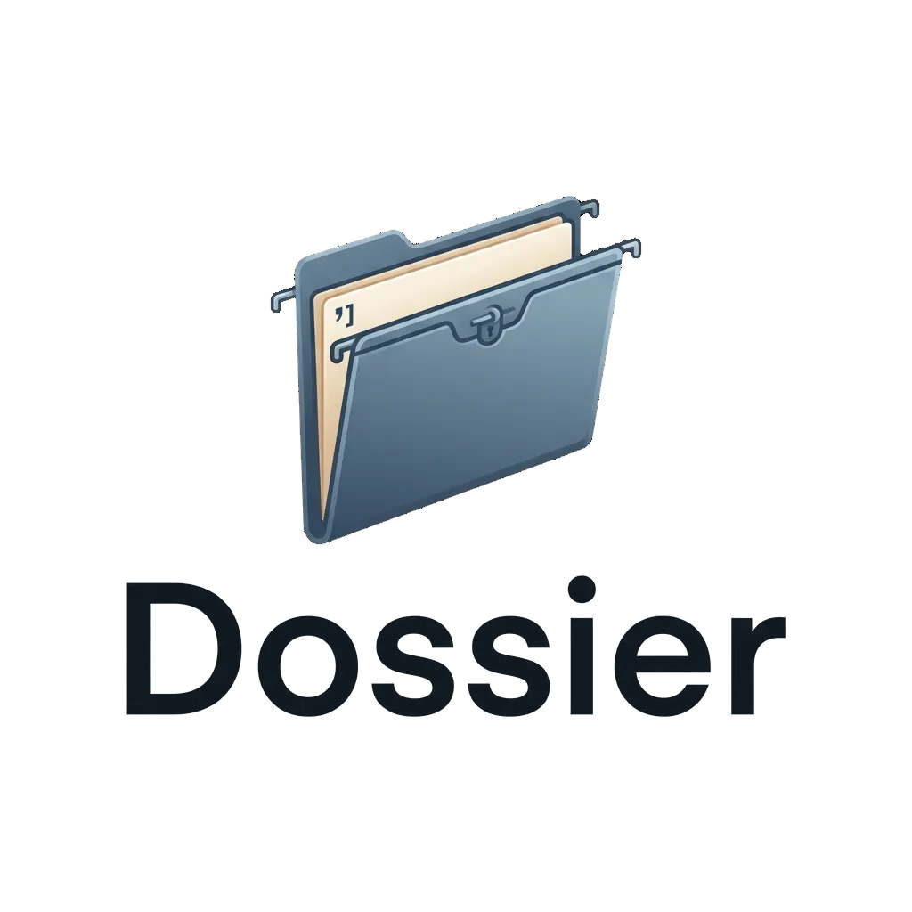

Dossier
Cited claims from work you already keep.
A local locker for professional evidence. Records become claim cards you could paste into a CV or letter. Each claim cites a record — or it is refused. Ask what you actually did; the answer carries URIs.
Locker, then interview
Ingest only the adapters you have. Extract drafts cards from the words already in a record. You approve before anything is paste-ready. Ask quotes a span when that span carries the question.
- Ingest — Slack, mail (capped), LinkedIn, ChatGPT, applications, transcripts, meetings, own pubs when the index is ready.
- Extract — deterministic drafts first; optional local model for the rest. Uncited claims stay refused.
- Approve — the human gate. Nothing is copied into a CV by the tool.
- Ask / packet — cited answers, or a refusal. Span stores the carrying sentence.
What you get
A buffet of pending and approved cards, markdown briefs, packets, and a posting-shaped CV or letter, plus a read-only referee shortlist that is never auto-attached.
- Claim cards with citation URIs in a local SQLite corpus
dossier askwith exact / auto / rich modesspan,defend,gaps,packet,tailorrefereesfrom a JSON people file or Twenty read
Stays on your machine
Ollama on loopback by default. Cloud completions are opt-in and print
an egress notice. Dumps, warehouse files, and evidence.db
stay out of git. No Twenty writes. No auto-attach of a referee name.